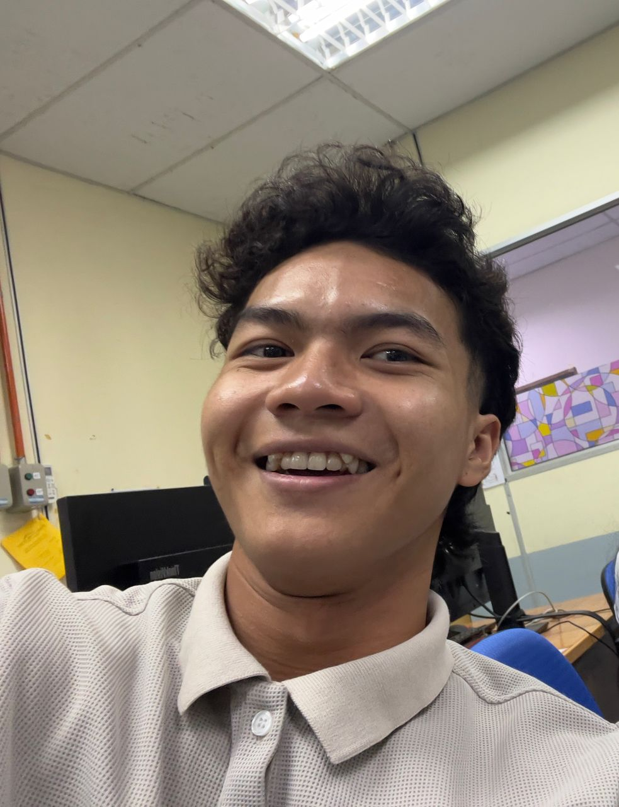
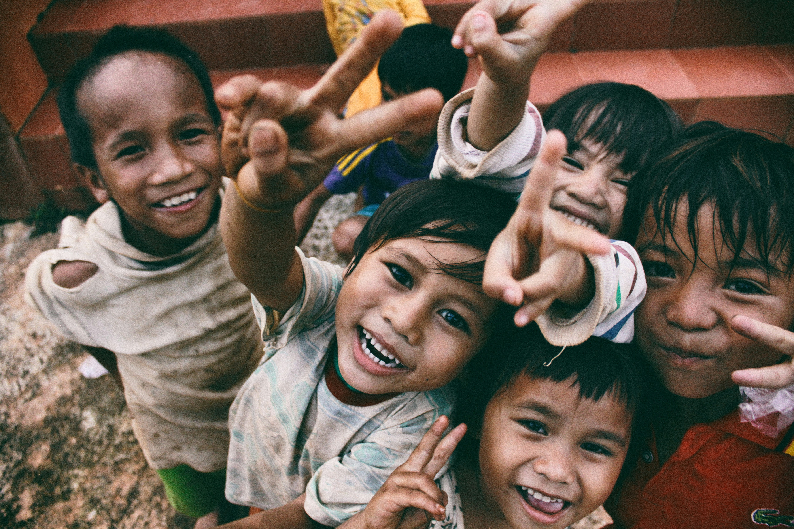

Meet Our Team
Dr. Amirul Nazmi

Founder & Director
Dr. Isyraq Haiqal

Operations Manager
Dr. Akmal Hariz

Volunteer Coordinator
Dr. Syammer

Volunteer Coordinator

Founded in 2022, Charity began as a small initiative driven by a shared vision—to make a real difference in the lives of those in need. What started as a local effort by a group of passionate individuals quickly grew into a dedicated organization committed to charity, fundraising, and community empowerment.
Our journey began with a single mission: to provide support to underprivileged communities by offering food, education, and healthcare assistance. In the early days, we focused on small-scale donation drives and volunteer programs, helping families in crisis and ensuring that children had access to education.
As the need for support grew, so did our efforts. Over the years, Charity has expanded its reach, forming partnerships with local businesses, schools, and volunteers to launch impactful programs. Today, we proudly run multiple charity campaigns, fundraising events, and community outreach programs that change lives daily.
Despite the challenges, our commitment remains unwavering. With the support of our donors, volunteers, and partners, we continue to build a brighter future for those in need, one step at a time.
To build a compassionate world where every person, regardless of background or circumstance, has access to basic needs, education, and opportunities to lead a dignified life. We envision a future where communities unite to uplift those in need, fostering a culture of generosity, inclusion, and sustainable change.
1. Expand Our Impact
We aim to reach more underprivileged communities by expanding our
fundraising efforts, increasing volunteer participation, and launching
new support programs. By broadening our reach, we can provide more
assistance to families in need and create lasting positive change.
2. Provide Essential Aid
Every person deserves access to basic necessities such as food, clean
water, shelter, and medical care. Our goal is to continuously provide
these life-saving resources to those affected by poverty, disasters,
and other crises.
3. Promote Education
We believe that education is the key to breaking the cycle of poverty.
Our initiatives focus on supporting children and adults through
scholarships, school supplies, skill development, and literacy
programs, giving them the tools to build a better future.
4. Encourage Community Involvement
Strong communities are built through collective effort. We strive to
engage volunteers, donors, and businesses to take part in our
initiatives. By creating opportunities for people to give back, we
foster a culture of kindness and responsibility.

Founder & Director
Operations Manager
Volunteer Coordinator
Volunteer Coordinator